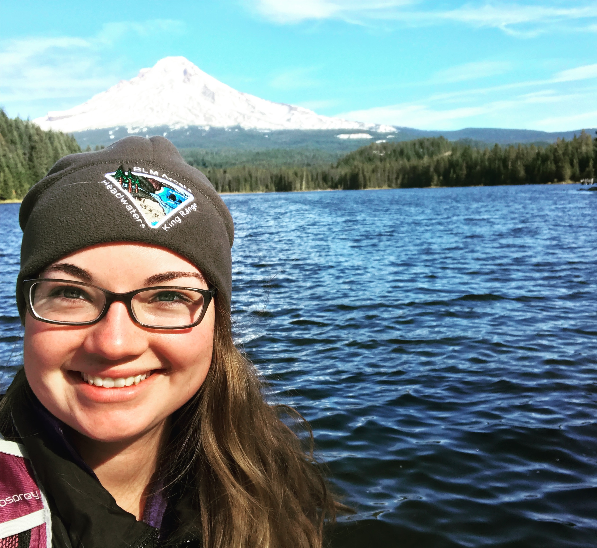
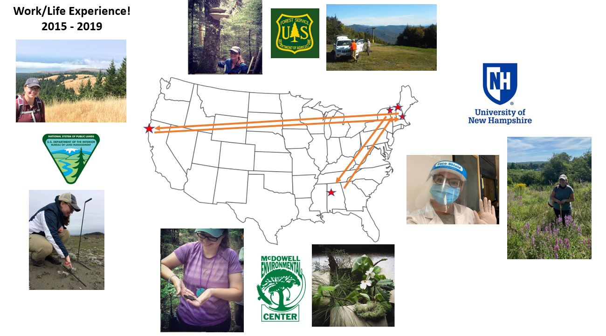

Personal Website of Madie Hassett
Madie Hassett
11/1/2021
Madie Hassett

Madie Hiking around Mt. Hood in Oregon, 2017
Education
BS Plant Biology from the University of Vermont (2015)
MS Mircobiology from the University of New Hampshire (2021)
Past Experiences

Can I make a map like this in R?
- Madie’s post-undergrad travels:
- Research technician at UVM in the Keller Lab
- Environmental educator in Alabama
- Forest Service FIA technician in NH/ME/VT/MA
- Botany Technician for the BLM in CA
- Substitute Teacher in NH (between field seasons)
- Research technician at UNH in the Poleatewich Lab
Link to CV or Linked in
Current Position: Research Assistant at University of New Hampshire in Agricultural Sciences PhD Program (2021 -?)
Project: Wood Fiber products as a sustainable alternative to peat & how they effect soil bourne pathogens in controlled environment agriculture. Project is in the early stages, stay tuned for more!
Future Goals
Professionally: A position that is a combination of education, research, and outreach in the realm of Plant Pathology. I could see myself working in acedemia and getting involed in extension, or transitioning over to working for a governmental entity like the USDA.
Personally: A small farm in some rural corner of New England (preferabley VT!) for myslef and Moe (my horse).

Moe has an honorary degree from UVM and UNH